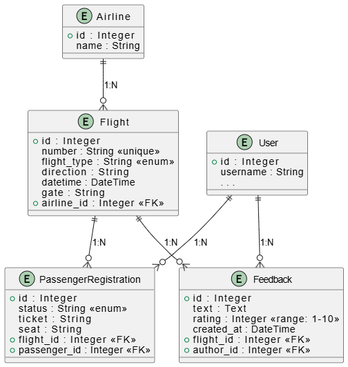

Лабораторная 2. Реализация простого сайта средствами django
Условие
Вариант 3: Табло отображения информации об авиаперелетах.
Хранится информация о номере рейса, авиакомпании, отлете, прилете, типе (прилет, отлет), номере гейта. Необходимо реализовать следующий функционал:
- Регистрация новых пользователей.
- Просмотр и резервирование мест на рейсах. Пользователь должен иметь возможность редактирования и удаления своих резервирований.
- Администратор должен иметь возможность зарегистрировать на рейс пассажира и вписать в систему номер его билета средствами Django-admin.
- В клиентской части должна формироваться таблица, отображающая всех пассажиров рейса.
- Написание отзывов к рейсам. При добавлении комментариев, должны сохраняться дата рейса, текст комментария, рейтинг (1-10), информация о комментаторе.
Выполнение
Модели

API
App users
POST /users/register/ - Регистрация пользователя
Тело запроса:
- username: Имя пользователя.
- password: Пароль.
POST /users/login/ - Аутентифицирует существующего пользователя.
Тело запроса:
- username: Имя пользователя.
- password: Пароль.
POST /users/logout/ - Завершает сессию пользователя.
App flights
GET /flights/?page=&q= - Возвращает список рейсов.
Реализована пагинация и поиск по следующим полям Flight: - number - direction - airline.name
GET /flights/<int:pk> - Возвращает детальную информацию о конкретном рейсе.
Детальная информация о рейсе, Возможность резервировать место для авторизованных пользователей, просмотр мест пассажиров на этот рейс (включая резервации), Возможность оставить фидбек (только для авторизованных пользователей, которые были зарегистрированы на рейс), и посмотреть фидбеки на этот рейс
POST /flights/<int:flight_id>/reserve-seat - Позволяет авторизованному пользователю забронировать место на конкретный рейс.
Тело запроса:
- Форма с информацией о месте.
Возвращает ошибку, если место уже занято или пользователь не авторизован. Если все хорошо, перенапрявляет на страницу рейса с обновленной информацией.
GET /flights/my-registrations - Показывает список всех рейсов, на которые авторизованный пользователь забронировал или зарегистрировал место.
POST /flights/<int:flight_id>/delete-registration - Позволяет авторизованному пользователю удалить свою бронь на конкретный рейс.
POST /flights/<int:flight_id>/leave-feedback - Позволяет авторизованному пользователю оставить отзыв и оценку для завершенного рейса.
Тело запроса:
- text: Текст отзыва (опционально).
- rating: Числовая оценка (обязательно, от 1 до 10).
Ответ:
Перенаправляет на страницу деталей рейса с добавленным отзывом.